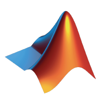

This site requires JavaScript to function. Please enable JavaScript in your browser.

Generate a GitHub Actions Workflow for MATLAB
Enter your repository to generate a starter workflow.
username/repository or URL
Please enter a valid username/repository or URL
Generate Workflow
Advanced Options
Use MATLAB batch licensing token
Use virtual display on Linux runner
Build across multiple platforms